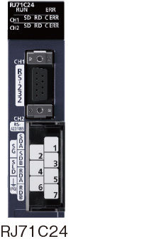
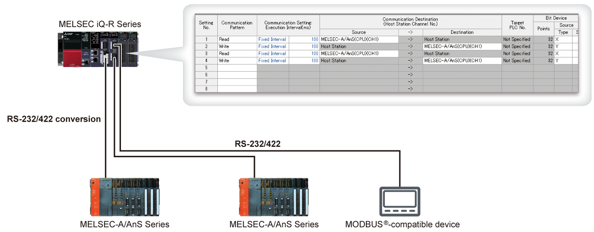

Controllers MELSEC iQ-R Series Product features -Network-

Serial communication module
Simply selecting from the communication protocol library in the engineering software GX Works3, data communication supporting general-purpose protocols such as MODBUS® is easily performed.

RJ71C24
RS-232: 1-channel,
RS-422/485: 1-channel
RJ71C24-R2
RS-232: 2-channel
RJ71C24-R4
RS-422/485: 2-channel
Features<sup>Data collection from the existing MELSEC-A Series and MODBUS®-compatible devices</sup>
- Just by registering parameters, easy device data exchange with the existing MELSEC-A Series and MODBUS®-compatible devices is possible
- Simply installing the MELSEC iQ-R Series for data collection enables data collection from the existing MELSEC-A Series easily

Specifications<sup>Serial communication module specifications</sup>
| Item | RJ71C24 | RJ71C24-R2 | RJ71C24-R4 |
|---|---|---|---|
| Transmission speed (bps) | 1.2k/2.4k/4.8k/9.6k/14.4k/19.2k/28.8k/38.4k/57.6k/115.2k/230.4k | ||
| MODBUS® communication function | ●*1 | ||
| Interface | |||
| CH1 | RS-232 | RS-232 | RS-422/485 |
| CH2CH2 | RS-422/485 | RS-232 | RS-422/485 |
| Overall transmission distance | |||
| RS-232 (m) | 15 | 15 | - |
| RS-422/485 (m) | 1200 | - | 1200 |
| Function | |||
| Simple CPU communication | ● | ● | ● |
- *1.The MODBUS® master function is supported when used with the simple CPU communication function.